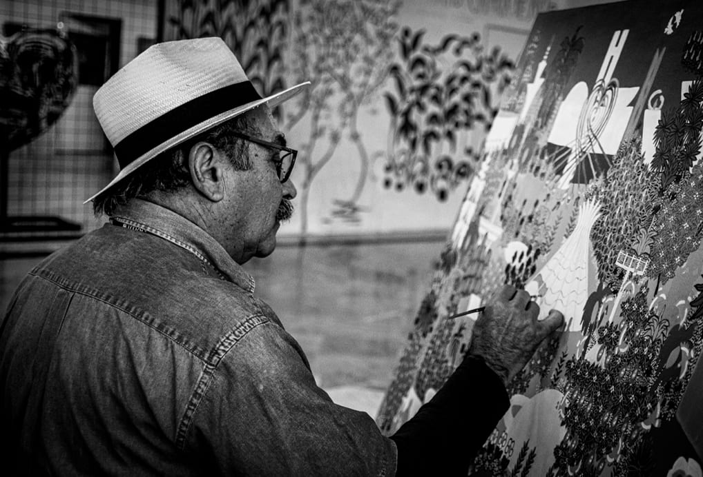
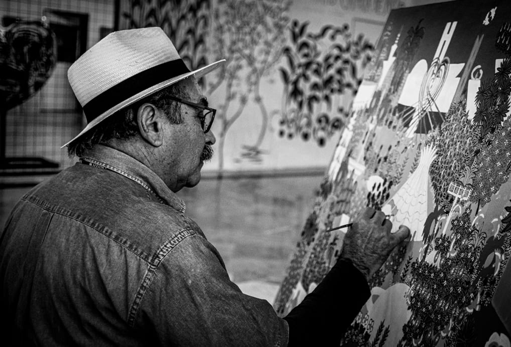

Um reencontro com a história e com a própria vida.
Muitos dos nossos idosos ajudaram a construir Brasília. Hoje, nosso projeto busca reconectá-los com esses lugares, celebrando a história, combatendo o isolamento e promovendo um envelhecimento ativo, com mais saúde, autonomia e alegria de viver.

 

O Desafio da Mobilidade
Sabemos que o transporte público insuficiente e a falta de acessibilidade em pontos turísticos são grandes barreiras. Nosso projeto foca em criar roteiros adaptados, com informações claras e transporte acessível, para garantir a segurança e a inclusão de todos, especialmente aqueles com baixa mobilidade.
Participe e Faça a Diferença
Sua voz é fundamental para construirmos essa iniciativa. Queremos saber quais lugares você gostaria de visitar e quais são suas necessidades.
Clique aqui para responder ao nosso questionário